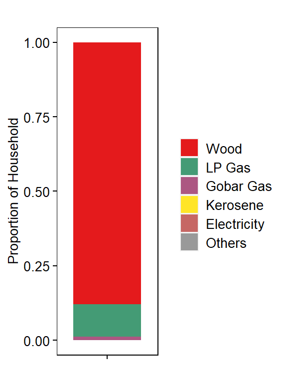
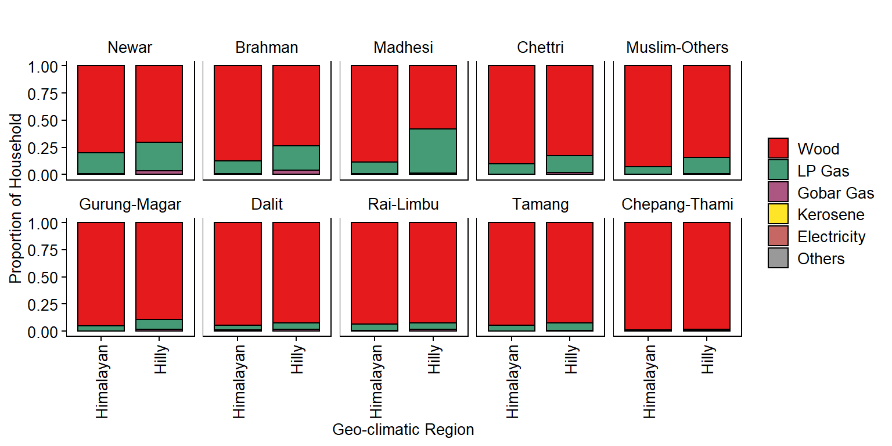
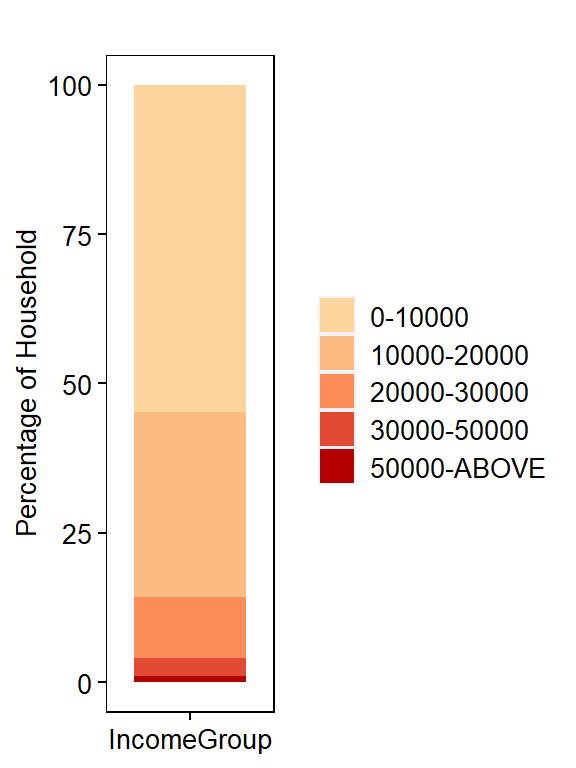
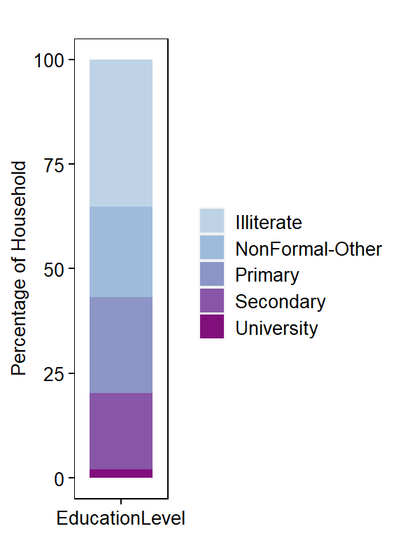

Explore Baseline Data
Define Libraries
library("stringr")
library("dplyr")
library("reshape2")
library("ggplot2")
library("gplots")
library("RColorBrewer")Define Path
dir.wrk <- getwd()
dir.data <- file.path(dir.wrk, "data/data_household")
dir.annot <- file.path(dir.wrk, "data/data_annotations")
dir.output <- file.path(dir.wrk, "data/data_processed")Define Files
file.dat <- file.path(dir.output, "household_level_data_categorical.tsv")Define Categories
type_ethnicity <- c("Newar","Brahman","Madhesi","Chettri","Muslim−Others",
"Gurung−Magar","Dalit","Rai−Limbu","Tamang","Chepang−Thami")
type_fuel <- c("Wood","LP Gas","Gobar Gas","Kerosene","Electricity","Others")
type_geo <- c("Himalayan","Hilly")
cpalette.eth <- c("#e31a1c","#a6cee3","#1f78b4","#b2df8a","#33a02c",
"#fb9a99","#fdbf6f","#ff7f00","#cab2d6","#6a3d9a")
cpalette.inc <- c("#fdd49e","#fdbb84","#fc8d59","#e34a33","#b30000")
cpalette.edu <- c("#bfd3e6","#9ebcda","#8c96c6","#8856a7","#810f7c")Load Data
dat <- read.delim(file.dat, header = TRUE, stringsAsFactors = FALSE)
dat <- dat %>% dplyr::mutate_all(as.character)
# FACTORIZE DATA ---
dat$source_cooking_fuel_post_eq <- factor(dat$source_cooking_fuel_post_eq, levels = type_fuel)
dat$Ethnicity <- factor(dat$Ethnicity, levels = type_ethnicity)
head(dat)## household_id District GeoRegion Ethnicity IncomeGroup EducationLevel
## 1 12010100001101 Okhaldhunga Hilly Rai-Limbu 0-10000 Illiterate
## 2 12010100002101 Okhaldhunga Hilly Rai-Limbu 0-10000 Illiterate
## 3 12010100003101 Okhaldhunga Hilly Gurung-Magar 0-10000 Illiterate
## 4 12010100004101 Okhaldhunga Hilly Gurung-Magar 0-10000 Illiterate
## 5 12010100005101 Okhaldhunga Hilly Gurung-Magar 0-10000 Illiterate
## 6 12010100006101 Okhaldhunga Hilly Gurung-Magar 0-10000 Illiterate
## source_cooking_fuel_post_eq
## 1 Wood
## 2 Wood
## 3 Wood
## 4 Wood
## 5 Wood
## 6 WoodGet Proportion of Households using each FuelType
df <- dat %>%
dplyr::count(source_cooking_fuel_post_eq, sort=FALSE, name="Freq") %>%
mutate(Proportion= Freq/sum(Freq))
df$Group <- "Total Household"
df$source_cooking_fuel_post_eq <- factor(df$source_cooking_fuel_post_eq, levels=type_fuel)
head(df)## # A tibble: 6 x 4
## source_cooking_fuel_post_eq Freq Proportion Group
## <fct> <int> <dbl> <chr>
## 1 Wood 656207 0.878 Total Household
## 2 LP Gas 81266 0.109 Total Household
## 3 Gobar Gas 8807 0.0118 Total Household
## 4 Kerosene 210 0.000281 Total Household
## 5 Electricity 189 0.000253 Total Household
## 6 Others 458 0.000613 Total HouseholdPlot Proportion of Households by FuelType use
# COLOR PALETTE ---
jColFun <- colorRampPalette(brewer.pal(n = 9, "Set1"))
# PLOT ---
p1 <- ggplot(df, aes(x=Group, y=Proportion)) +
geom_bar(aes(fill=source_cooking_fuel_post_eq), stat="identity", color=NA, width=0.8, size=0.5) +
scale_fill_manual(values=jColFun(6)) +
theme(
axis.text.x = element_blank(),
axis.text.y = element_text(size = 10, color="#000000"),
axis.title = element_text(size = 10, color="#000000"),
plot.title = element_text(size = 10, color="#000000", hjust=0.5),
panel.grid.major = element_blank(),
panel.grid.minor = element_blank(),
axis.ticks = element_line(size=0.4, color="#000000"),
strip.text = element_text(size=10, color="#000000"),
strip.background = element_rect(fill="#FFFFFF", color="#FFFFFF"),
panel.background = element_rect(fill="#FFFFFF", color="#000000"),
legend.text = element_text(size = 10, color="#000000"),
legend.title = element_blank(),
legend.key.size = unit(0.5, "cm"),
legend.position = "right") +
ylab("Proportion of Household") +
xlab("") +
ggtitle("")
p1
Get Household Proportion by Ethnicity and Income for each FuelType
dm <- dat %>%
dplyr::count(Ethnicity, IncomeGroup, source_cooking_fuel_post_eq, sort=FALSE, name="Freq") %>%
group_by(Ethnicity, IncomeGroup) %>%
mutate(Proportion=Freq/sum(Freq))
dm$source_cooking_fuel_post_eq <- factor(dm$source_cooking_fuel_post_eq, levels=type_fuel)
dm$Ethnicity <- factor(dm$Ethnicity, levels=type_ethnicity)
head(dm)## # A tibble: 6 x 5
## # Groups: Ethnicity, IncomeGroup [1]
## Ethnicity IncomeGroup source_cooking_fuel_post_eq Freq Proportion
## <fct> <chr> <fct> <int> <dbl>
## 1 Newar 0-10000 Wood 27747 0.910
## 2 Newar 0-10000 LP Gas 2268 0.0744
## 3 Newar 0-10000 Gobar Gas 442 0.0145
## 4 Newar 0-10000 Kerosene 5 0.000164
## 5 Newar 0-10000 Electricity 11 0.000361
## 6 Newar 0-10000 Others 15 0.000492Plot Household Proportion by Ethnicity and Income for each FuelType
# COLOR PALETTE ---
jColFun <- colorRampPalette(brewer.pal(n = 9, "Set1"))
# PLOT ---
p2 <- ggplot(dm, aes(x=IncomeGroup, y=Proportion)) +
geom_bar(aes(fill=source_cooking_fuel_post_eq), stat="identity", color="#000000", width=0.8, size=0.5) +
scale_fill_manual(values=jColFun(6)) +
facet_wrap(~Ethnicity, ncol=5, scales="fixed", drop=FALSE, strip.position="top") +
theme(
axis.text.x = element_text(size = 10, color="#000000", angle=90, hjust=1, vjust=0.5),
axis.text.y = element_text(size = 10, color="#000000"),
axis.title = element_text(size = 10, color="#000000"),
plot.title = element_text(size = 10, color="#000000", hjust=0.5),
panel.grid.major = element_blank(),
panel.grid.minor = element_blank(),
axis.ticks = element_line(size=0.4, color="#000000"),
strip.text = element_text(size=10, color="#000000"),
strip.background = element_rect(fill="#FFFFFF", color="#FFFFFF"),
panel.background = element_rect(fill="#FFFFFF", color="#000000"),
legend.text = element_text(size = 10, color="#000000"),
legend.title = element_blank(),
legend.key.size = unit(0.5, "cm"),
legend.position = "right") +
ylab("Proportion of Household") +
xlab("Income Group") +
ggtitle("")
p2Get Household Proportion by Ethnicity and Education Level for each FuelType
dm <- dat %>%
dplyr::count(Ethnicity, EducationLevel, source_cooking_fuel_post_eq, sort=FALSE, name="Freq") %>%
group_by(Ethnicity, EducationLevel) %>%
mutate(Proportion=Freq/sum(Freq))
dm$source_cooking_fuel_post_eq <- factor(dm$source_cooking_fuel_post_eq, levels=type_fuel)
dm$EducationLevel <- as.factor(dm$EducationLevel)
head(dm)## # A tibble: 6 x 5
## # Groups: Ethnicity, EducationLevel [1]
## Ethnicity EducationLevel source_cooking_fuel_post_eq Freq Proportion
## <fct> <fct> <fct> <int> <dbl>
## 1 Newar Illiterate Wood 16549 0.867
## 2 Newar Illiterate LP Gas 2207 0.116
## 3 Newar Illiterate Gobar Gas 311 0.0163
## 4 Newar Illiterate Kerosene 3 0.000157
## 5 Newar Illiterate Electricity 5 0.000262
## 6 Newar Illiterate Others 8 0.000419Plot Household Proportion by Ethnicity and Education Level for each FuelType
# COLOR PALETTE ---
jColFun <- colorRampPalette(brewer.pal(n = 9, "Set1"))
# PLOT ---
p3 <- ggplot(dm, aes(x=EducationLevel, y=Proportion)) +
geom_bar(aes(fill=source_cooking_fuel_post_eq), stat="identity", color="#000000", width=0.8, size=0.5) +
scale_fill_manual(values=jColFun(6)) +
facet_wrap(~Ethnicity, ncol=5, scales="fixed", drop=FALSE, strip.position="top") +
theme(
axis.text.x = element_text(size = 10, color="#000000", angle=90, hjust=1, vjust=0.5),
axis.text.y = element_text(size = 10, color="#000000"),
axis.title = element_text(size = 10, color="#000000"),
plot.title = element_text(size = 10, color="#000000", hjust=0.5),
panel.grid.major = element_blank(),
panel.grid.minor = element_blank(),
axis.ticks = element_line(size=0.4, color="#000000"),
strip.text = element_text(size=10, color="#000000"),
strip.background = element_rect(fill="#FFFFFF", color="#FFFFFF"),
panel.background = element_rect(fill="#FFFFFF", color="#000000"),
legend.text = element_text(size = 10, color="#000000"),
legend.title = element_blank(),
legend.key.size = unit(0.5, "cm"),
legend.position = "right") +
ylab("Proportion of Household") +
xlab("Education Level") +
ggtitle("")
p3Get Household Proportion by Ethnicity and Geo-climatic Region for each FuelType
dm <- dat %>%
dplyr::count(Ethnicity, GeoRegion, source_cooking_fuel_post_eq, sort=FALSE, name="Freq") %>%
group_by(Ethnicity, GeoRegion) %>%
mutate(Proportion=Freq/sum(Freq))
dm$source_cooking_fuel_post_eq <- factor(dm$source_cooking_fuel_post_eq, levels=type_fuel)
dm$GeoRegion <- factor(dm$GeoRegion, levels=type_geo)
head(dm)## # A tibble: 6 x 5
## # Groups: Ethnicity, GeoRegion [1]
## Ethnicity GeoRegion source_cooking_fuel_post_eq Freq Proportion
## <fct> <fct> <fct> <int> <dbl>
## 1 Newar Hilly Wood 29914 0.702
## 2 Newar Hilly LP Gas 11324 0.266
## 3 Newar Hilly Gobar Gas 1314 0.0308
## 4 Newar Hilly Kerosene 14 0.000329
## 5 Newar Hilly Electricity 14 0.000329
## 6 Newar Hilly Others 14 0.000329Plot Household Proportion by Ethnicity and Geo-climatic Region for each FuelType
# COLOR PALETTE ---
jColFun <- colorRampPalette(brewer.pal(n = 9, "Set1"))
# PLOT ---
p4 <- ggplot(dm, aes(x=GeoRegion, y=Proportion)) +
geom_bar(aes(fill=source_cooking_fuel_post_eq), stat="identity", color="#000000", width=0.8, size=0.5) +
scale_fill_manual(values=jColFun(6)) +
facet_wrap(~Ethnicity, ncol=5, scales="fixed", drop=FALSE, strip.position="top") +
theme(
axis.text.x = element_text(size = 10, color="#000000", angle=90, hjust=1, vjust=0.5),
axis.text.y = element_text(size = 10, color="#000000"),
axis.title = element_text(size = 10, color="#000000"),
plot.title = element_text(size = 10, color="#000000", hjust=0.5),
panel.grid.major = element_blank(),
panel.grid.minor = element_blank(),
axis.ticks = element_line(size=0.4, color="#000000"),
strip.text = element_text(size=10, color="#000000"),
strip.background = element_rect(fill="#FFFFFF", color="#FFFFFF"),
panel.background = element_rect(fill="#FFFFFF", color="#000000"),
legend.text = element_text(size = 10, color="#000000"),
legend.title = element_blank(),
legend.key.size = unit(0.5, "cm"),
legend.position = "right") +
ylab("Proportion of Household") +
xlab("Geo-climatic Region") +
ggtitle("")
p4
Household Population Distribution by Ethnicity
dm <- dat %>%
dplyr::count(Ethnicity, sort=TRUE, name="Freq") %>%
mutate(Percentage= (Freq/sum(Freq)) * 100)
dm$Country <- "Nepal"
# Factorize data
dm$Ethnicity <- factor(dm$Ethnicity, levels=type_ethnicity)
head(dm)## # A tibble: 6 x 4
## Ethnicity Freq Percentage Country
## <fct> <int> <dbl> <chr>
## 1 Tamang 209075 28.0 Nepal
## 2 Chettri 134439 18.0 Nepal
## 3 Brahman 109725 14.7 Nepal
## 4 Gurung-Magar 81840 11.0 Nepal
## 5 Dalit 81436 10.9 Nepal
## 6 Newar 68603 9.18 NepalPlot Household Proportion by Ethnicity
# PLOT ---
p5 <- ggplot(dm, aes(x=Country, y=Percentage)) +
geom_bar(aes(fill=Ethnicity), stat="identity", color=NA, width=0.8, size=0.5) +
scale_fill_manual(values=cpalette.eth) +
theme(
axis.text.x = element_blank(),
axis.text.y = element_text(size = 10, color="#000000"),
axis.title = element_text(size = 10, color="#000000"),
plot.title = element_text(size = 10, color="#000000", hjust=0.5),
panel.grid.major = element_blank(),
panel.grid.minor = element_blank(),
axis.ticks = element_line(size=0.4, color="#000000"),
strip.text = element_text(size=10, color="#000000"),
strip.background = element_rect(fill="#FFFFFF", color="#FFFFFF"),
panel.background = element_rect(fill="#FFFFFF", color="#000000"),
legend.text = element_text(size = 10, color="#000000"),
legend.title = element_blank(),
legend.key.size = unit(0.5, "cm"),
legend.position = "right") +
ylab("Percentage of Household") +
xlab("Ethnicity") +
ggtitle("")
p5
Household Population Distribution by IncomeGroup
dm <- dat %>%
dplyr::count(IncomeGroup, sort=TRUE, name="Freq") %>%
mutate(Percentage= (Freq/sum(Freq)) * 100)
dm$Country <- "Nepal"
# Factorize data
dm$IncomeGroup <- as.factor(dm$IncomeGroup)
head(dm)## # A tibble: 5 x 4
## IncomeGroup Freq Percentage Country
## <fct> <int> <dbl> <chr>
## 1 0-10000 409102 54.8 Nepal
## 2 10000-20000 231688 31.0 Nepal
## 3 20000-30000 76124 10.2 Nepal
## 4 30000-50000 21943 2.94 Nepal
## 5 50000-ABOVE 8280 1.11 NepalPlot Household Proportion by IncomeGroup
# PLOT ---
p6 <- ggplot(dm, aes(x=Country, y=Percentage)) +
geom_bar(aes(fill=IncomeGroup), stat="identity", color=NA, width=0.8, size=0.5) +
scale_fill_manual(values=cpalette.inc) +
theme(
axis.text.x = element_blank(),
axis.text.y = element_text(size = 10, color="#000000"),
axis.title = element_text(size = 10, color="#000000"),
plot.title = element_text(size = 10, color="#000000", hjust=0.5),
panel.grid.major = element_blank(),
panel.grid.minor = element_blank(),
axis.ticks = element_line(size=0.4, color="#000000"),
strip.text = element_text(size=10, color="#000000"),
strip.background = element_rect(fill="#FFFFFF", color="#FFFFFF"),
panel.background = element_rect(fill="#FFFFFF", color="#000000"),
legend.text = element_text(size = 10, color="#000000"),
legend.title = element_blank(),
legend.key.size = unit(0.5, "cm"),
legend.position = "right") +
ylab("Percentage of Household") +
xlab("IncomeGroup") +
ggtitle("")
p6
Household Population Distribution by EducationLevel
dm <- dat %>%
dplyr::count(EducationLevel, sort=TRUE, name="Freq") %>%
mutate(Percentage= (Freq/sum(Freq)) * 100)
dm$Country <- "Nepal"
# Factorize data
dm$IncomeGroup <- as.factor(dm$EducationLevel)
head(dm)## # A tibble: 5 x 5
## EducationLevel Freq Percentage Country IncomeGroup
## <chr> <int> <dbl> <chr> <fct>
## 1 Illiterate 263157 35.2 Nepal Illiterate
## 2 Primary 171947 23.0 Nepal Primary
## 3 NonFormal-Other 160562 21.5 Nepal NonFormal-Other
## 4 Secondary 135970 18.2 Nepal Secondary
## 5 University 15501 2.07 Nepal UniversityPlot Household Proportion by EducationLevel
# PLOT ---
p7 <- ggplot(dm, aes(x=Country, y=Percentage)) +
geom_bar(aes(fill=EducationLevel), stat="identity", color=NA, width=0.8, size=0.5) +
scale_fill_manual(values=cpalette.edu) +
theme(
axis.text.x = element_blank(),
axis.text.y = element_text(size = 10, color="#000000"),
axis.title = element_text(size = 10, color="#000000"),
plot.title = element_text(size = 10, color="#000000", hjust=0.5),
panel.grid.major = element_blank(),
panel.grid.minor = element_blank(),
axis.ticks = element_line(size=0.4, color="#000000"),
strip.text = element_text(size=10, color="#000000"),
strip.background = element_rect(fill="#FFFFFF", color="#FFFFFF"),
panel.background = element_rect(fill="#FFFFFF", color="#000000"),
legend.text = element_text(size = 10, color="#000000"),
legend.title = element_blank(),
legend.key.size = unit(0.5, "cm"),
legend.position = "right") +
ylab("Percentage of Household") +
xlab("EducationLevel") +
ggtitle("")
p7
Get Abundance (Number of Households) by Ethnicity and FuelType
df <- dat %>% dplyr::count(Ethnicity, source_cooking_fuel_post_eq, sort=FALSE, name="Freq")
dm <- reshape2::dcast(data=df, formula=Ethnicity ~ source_cooking_fuel_post_eq, fun.aggregate=sum, value.var="Freq")
head(dm)## Ethnicity Wood LP Gas Gobar Gas Kerosene Electricity Others
## 1 Newar 50677 16389 1441 25 39 32
## 2 Brahman 86186 20236 3156 39 30 78
## 3 Madhesi 2501 1263 13 6 5 12
## 4 Chettri 115935 17083 1252 41 48 80
## 5 Muslim-Others 9742 1220 62 2 4 1
## 6 Gurung-Magar 74867 6135 770 18 13 37Total Transformation (To Get Relative Abundance Values)
# TOTAL TRANSFORMATION ---
dmt <- vegan::decostand(dm[,2:7], "total")
rownames(dmt) <- dm$Ethnicity
dmt <- dmt[match(rev(type_ethnicity), rownames(dmt)),]
dmt## Wood LP Gas Gobar Gas Kerosene Electricity
## Chepang-Thami 0.9847605 0.01243764 0.001571790 0.0001366774 0.0000000000
## Tamang 0.9354634 0.05919407 0.004342939 0.0001817530 0.0001817530
## Rai-Limbu 0.9295654 0.06128091 0.007986484 0.0002764552 0.0000614345
## Dalit 0.9338008 0.05387052 0.011321774 0.0003683874 0.0001227958
## Gurung-Magar 0.9147972 0.07496334 0.009408602 0.0002199413 0.0001588465
## Muslim-Others 0.8831475 0.11059741 0.005620524 0.0001813072 0.0003626145
## Chettri 0.8623614 0.12706878 0.009312774 0.0003049710 0.0003570393
## Madhesi 0.6581579 0.33236842 0.003421053 0.0015789474 0.0013157895
## Brahman 0.7854728 0.18442470 0.028762816 0.0003554340 0.0002734108
## Newar 0.7386995 0.23889626 0.021004912 0.0003644156 0.0005684883
## Others
## Chepang-Thami 1.093419e-03
## Tamang 6.361354e-04
## Rai-Limbu 8.293657e-04
## Dalit 5.157424e-04
## Gurung-Magar 4.521017e-04
## Muslim-Others 9.065361e-05
## Chettri 5.950654e-04
## Madhesi 3.157895e-03
## Brahman 7.108681e-04
## Newar 4.664519e-04Heatmap for Relative Abundance by Ethnicity and FuelType
jColFun <- colorRampPalette(brewer.pal(n = 9, "Reds"))
heatmap.2(as.matrix(dmt), col = jColFun(256), margin=c(8,15),
Colv=TRUE, Rowv = FALSE, cexRow=1, cexCol=1,
dendrogram ="none", trace="none", main="",
hclustfun = function(x) hclust(x, method = "ward.D2"),
distfun = function(x) dist(x, method = "euclidean"),
colsep=c(1:50), rowsep=c(1:50),
sepcolor="#BDBDBD", sepwidth=c(0.0005,0.0005),
key="TRUE", keysize=1, density.info="none",
key.title = NA, key.xlab = NA, key.ylab = NA,
key.par=list(mgp=c(1.5, 0.5, 0), mar=c(2.5, 2.5, 1, 0)))Get Distance Matrix of Ethnicity based on FuelType Usage
# LOG TRANSFORMATION ---
dml <- vegan::decostand(dm[,2:7], "log")
dist_dml <- vegan::vegdist(x=as.matrix(dml), method="euclidean", binary=FALSE, diag=TRUE, upper=TRUE, na.rm = FALSE)
dist_dml <- as.matrix(dist_dml)
colnames(dist_dml) <- rownames(dist_dml) <- dm$EthnicityCorrelation by Ethnicity
jColFun <- colorRampPalette(brewer.pal(n = 9, "Blues"))
heatmap.2(dist_dml, col=rev(jColFun(256)), margin=c(8,15),
Colv=TRUE, Rowv = TRUE, cexRow=1, cexCol=1,
dendrogram ="both", trace="none", main="",
hclustfun = function(x) hclust(x, method = "ward.D2"),
distfun = function(x) dist(x, method = "euclidean"),
colsep=c(1:50), rowsep=c(1:50),
sepcolor="#FFFFFF", sepwidth=c(0.0005,0.0005),
key="TRUE", keysize=1, density.info="none", symkey=0,
key.title = NA, key.xlab = NA, key.ylab = NA,
key.par=list(mgp=c(1.5, 0.5, 0), mar=c(2.5, 2.5, 1, 0)))